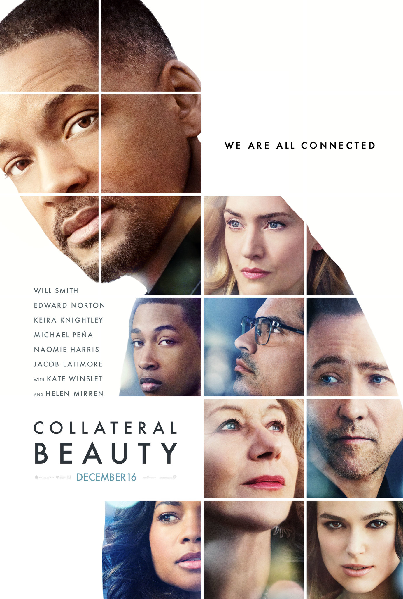
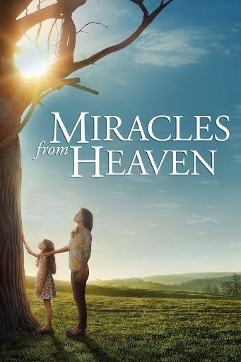
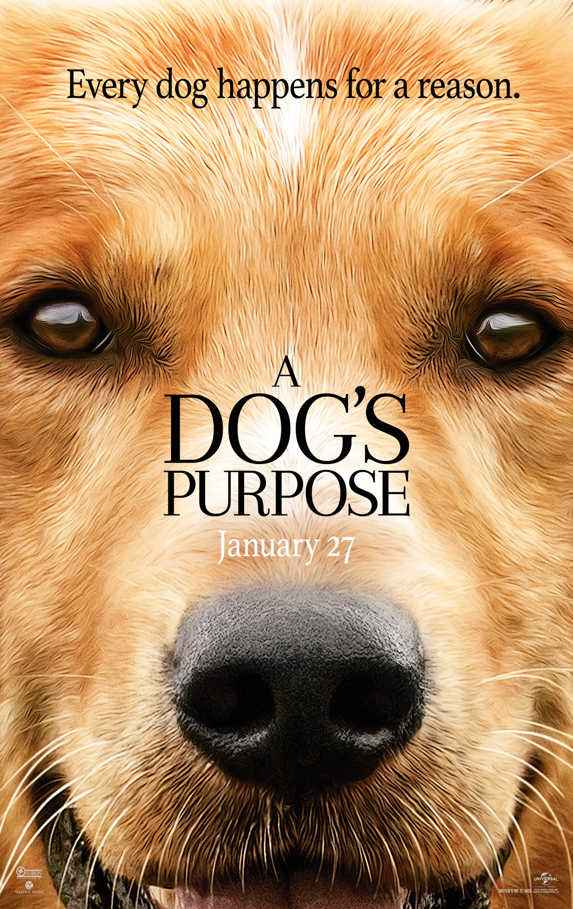

Direction: Adrian Molina, Lee Unkrich
Gender: Adventure
Prize: Academy Award for Best Animated Film
launch: October 27, 2017
Gender: Adventure
Prize: Academy Award for Best Animated Film
launch: October 27, 2017


Despite his family's exclusion from music for generations, young Miguel dreams of becoming a talented musician like his idol Ernesto de la Cruz. Desperate to prove his talent, Miguel finds himself in the dazzling and colorful Land of the Dead. After meeting a charming rogue named Héctor, the two new friends embark on an extraordinary journey to uncover the true story behind Miguel's family history.
Coco is a 2017 American computer-animated musical film produced by Pixar Animation Studios and distributed by Walt Disney Studios Motion Pictures. Based on an original idea by Lee Unkrich, the animated feature film is directed by Unkrich and co-directed by Adrian Molina. It was released in Mexican cinemas the following week, and became the highest-grossing film in the country's history.
"Coco" is a Pixar animation that captivated audiences with its unique approach to death and the celebration of life. The film tells the story of Miguel, a young Mexican musician who accidentally enters the World of the Dead during the Day of the Dead. The way death is handled in the film is notable for several reasons. Firstly, the film approaches death in a way that makes it less scary for children. Rather than being a somber theme, death is represented as a natural part of the cycle of life, and deceased ancestors are remembered with love and joy. This helps children understand death in a more positive and healthy way. Additionally, "Live" highlights the importance of remembering and honoring those who have passed…
Júnior Vandinho "One of the best animations. It's been a while since
I've cried in a movie (whether it's animation or not). Despite being an animation,
they take a deep dive and appeal to sentimentality. But that's a positive point,
because the plot itself is in charge of making you feel that lump in your throat and
in the end it stirs your feelings once and for all."
Pedro Henrique"A WORK OF ART! Everything about this movie works.
The melodies, the colors, the jokes, the adventures and the sadness. It's a VERY
beautiful film and it has a very strong message. Yes, even those who are not one to
cry can have tears drawn from the animation. I highly recommend it."


Aninha Claro"The film shows a life lesson, it shows how important
it is to value the family. Sometimes we may not accept a family tradition or
something like that, maybe because it is imposed and not explained. Miguel's story
leaves a life lesson for everyone regardless of religion. Perfect, I cried a lot."
For the critic Lucas Rigaud, "Coco" does not start from an
innovative premise, since it addresses a character dissatisfied with the demands of
his family and non-acceptance, triggering
events that end up making him leave his comfort zone and struggle to find a way back home, as happens in several animações da Disney e Disney/Pixar. On the other hand, just like these several feature films from the most powerful studio in the world, what counts is the way in which this story already seen before develops and finds in itself a unique identity, to the point of surprising when we least expect it. In "Viva", the unfolding of the plot, surprising and shocking twists for an animation aimed at children, sympathetic characters and impeccable soundtrack.
Collateral Beauty


Howard goes into depression after a personal tragedy and starts writing letters to Death, Time and Love, . But what seems impossible becomes reality when these three parts of the universe decide to respond, now trying to teach the value of life for Howard.
Miracles from Heaven


One day, Annabel begins to feel severe pain in her abdomen. After examinations, it is It was found that the girl has a serious digestive problem. The situation makes Christy seek at all costs some way to save his daughter's life, while at the same time away from your belief in God.
A Dog's Purpose


A dog dies and is reincarnated several times on Earth. Although you meet new people and live many adventures, he maintains the dream of finding Ethan, his first owner, who has always been your greatest friend.